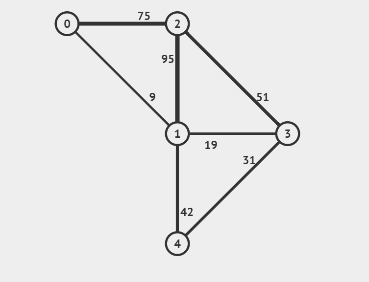

Prim’s algorithm for finding the minimum spanning tree starts with an empty spanning tree. The idea is to maintain two sets of vertices. The first set contains the vertices already included in the MST, and the other set contains the vertices not yet included.
At every step, it considers all the edges that connect the two sets and picks the minimum weight edge from these edges. After picking the edge, it moves the other endpoint of the edge to the set containing MST.
How does Prim’s Algorithm Work?
The working of Prim’s algorithm can be described by the following steps:
Determine an arbitrary vertex as the starting vertex of the MST.
Follow steps 3 to 5 until there are vertices that are not included in the MST (known as fringe vertices).
Find edges connecting any tree vertex with the fringe vertices.
Find the minimum among these edges.
Add the chosen edge to the MST if it does not form any cycle.
Return the MST and exit.
Example
Consider the following graph as an example for which we need to find the Minimum Spanning Tree (MST).

Firstly, we select an arbitrary vertex that acts as the starting vertex of the Minimum Spanning Tree. Here, we have selected vertex 0 as the starting vertex.
We can see the illustration below to understand better:
Output
The total weight of the Minimum Spanning Tree is: 110
Complexity Analysis of Prim’s Algorithm
Time Complexity: O(E * log(E)) where E is the number of edges.
Auxiliary Space: O(V²) where V is the number of vertices.
Advantages of Prim’s Algorithm
Prim’s algorithm is guaranteed to find the MST in a connected, weighted graph.
It has a time complexity of O(E log V) using a binary heap or Fibonacci heap, where E is the number of edges and V is the number of vertices.
It is relatively simple to understand and implement compared to some other MST algorithms.
Disadvantages of Prim’s Algorithm
Prim’s algorithm can be slow on dense graphs with many edges, as it requires iterating over all edges at least once.
It relies on a priority queue, which can take up extra memory and slow down the algorithm on very large graphs.
The choice of the starting node can affect the MST output, which may not be desirable in some applications.